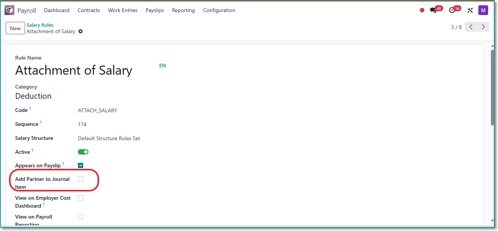
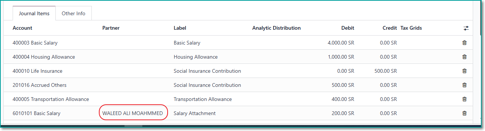

Odoo by default showing the partner in journal entry items for Net Salary rule and for any rules have a partner in partner field. This app will allow you to add payslip employee partner to journal entry item for any rule by enabling "Add Partner to Journal Item" in salary rule.
Employee partner will be shown in journal entry item as below:
